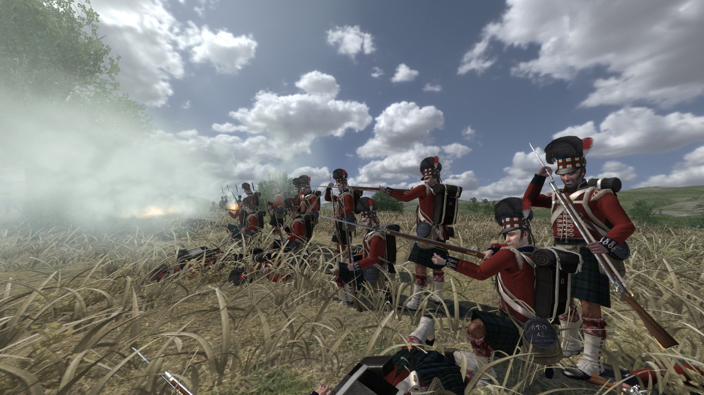

Additional Content
"Hold formation till we get the order to fire at will. First volley pick targets, second volley wait for signal then fire, target allocation not necessary. Fire at will order remains in place till the enemy reaches the sandbag fortification, then affix bayonets and break formation."
— Field Commanding Officer Xx_tightRope_xX, 7th match of the season's campaign.
Shortly after release, the developers set their sights on expanding the game to new horizons beyond just the medieval Europe setting. The idea was to completely change the fundamentals of the game and move it away from the sword and shield gameplay that they had worked on thus far, and so the Napoleonic Wars DLC was born.
A multiplayer-only expansion that centered around 19th Century warfare and tactics. The addition of firearms and artillery coupled with the slow movement and reload time made the perfect combination of factors to force the playerbase to adopt some of the real life strategies of the battles of the 1800s such as forming firing lines, firing in volleys, building fortifications, and overwhelming enemy positions with canon fire (fun fact, this is where the phrase "canon fodder" comes from).
Player-made "regiments" quickly formed and began organizing battles against each other, which would then lead to the creation of full on military campaigns- a sort of tournament. A regiment is generally formed by its General, followed by his or her officers, and lastly the riflemen that make the majority of the troops. Friendly (and sometimes not very friendly) competition between regiments is encouraged and it is what has kept the DLC alive for so long up to this very day.

Every once in a while (usually once every calendar season) two or more regiments organize a campaign wherein they will make a map and divide it in territories that will then be taken and/or lost by whichever regiment wins or loses the battle that takes place in that specific part of the map. The win conditions of every territory can vary, some of them are open field battles where clear communication and skillful placement of troops are key to victory, others might consist of holding siege to a town or castle, and other territories require the teams to capture the other's flag.
Rivalries are made, titles are earned, promotions are given. Sometimes the higher ups of the regiments are required to give speeches in the presence of the entire company through Discord voice chat, sometimes votes are held to decide who will lead the next battle.

While Warband’s base game focused heavily on single-player strategy, Napoleonic Wars became one of the most competitive multiplayer environments in the franchise. Formal leagues emerged, complete with weekly fixtures, standings, disciplinary rules, and referees ensuring matches followed agreed-upon protocols. Some regiments handled recruitment the way esports teams do today: applications, trials, and scheduled training hours. Over time, certain regiments gained reputations—some for discipline, some for raw skill, others for their chaotic but oddly effective “charge and pray” strategies.
Beyond campaigns, the community regularly organizes reenactments, memorial battles, themed events, and historically inspired scenarios. Some regiments stage recreations of famous battles like Austerlitz or Waterloo while others opted for humorous events such as “bayonet-only Fridays,” “musician brawls,” or cavalry jousting tournaments. Over the years, these gatherings have fostered a culture that blended military roleplay with genuine camaraderie, to the point where many players have stayed active in the DLC long after moving on from the Warband base game itself.